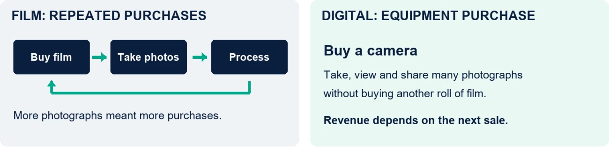
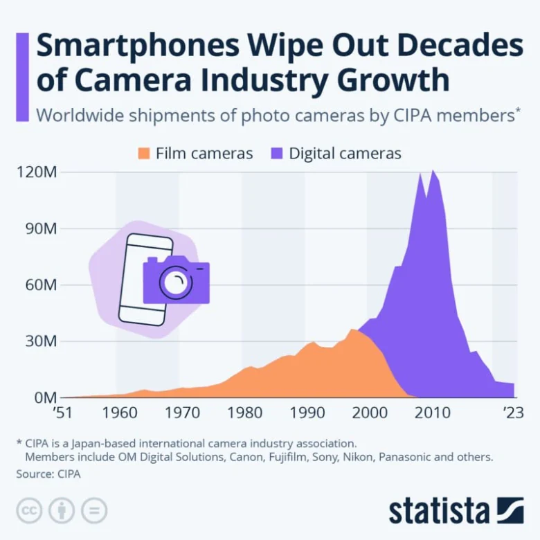

Common folklore says Kodak invented the digital camera, buried it because it threatened its core film business, and went bankrupt.
The beginning and end are true, but the middle is wrong and much longer than most people realize. Kodak engineer Steve Sasson built a self-contained digital camera prototype in 1975. Kodak filed for bankruptcy protection in January 2012 and announced its plan to leave the camera business the following month. That’s a lot of road in between. Along the way, Kodak developed and sold digital cameras. [1][3][4]
By 2005, Kodak was the leading supplier of digital cameras in the United States. It held almost a quarter of the market by shipments, ahead of Canon and Sony. It was the second year in a row Kodak had held first place. The familiar story leaves out that pivot and commercial success. [2]
How do you embrace the technology that threatens your core business, become a market leader, and still end up bankrupt?
In my Buggy Whips article, I focused on keeping the existing business running while building its replacement. Kodak and Fujifilm raise the next question: If you’re going to pivot, where do you go? Understanding your value-added is central to that choice. What can you contribute that customers will pay for, and does it give you an advantage worth investing in?
Kodak’s flipped revenue model
With film, you bought a roll, took pictures, paid to have it developed, and then bought another roll. More photographs meant more film and processing purchases.
Digital photography changed all that. You could see your pictures immediately and take as many pictures as you liked. You could print the ones you wanted and keep the rest on a computer. The cost of taking another picture dropped to almost nothing.
Consumers loved it. Worldwide camera shipments by members of CIPA, the camera industry association, peaked at more than 120 million in 2010. [5]
Exhibit 1
Digital changed how Kodak earned money from photography


As consumers adopted digital photography, Kodak’s repeat film sales declined. Selling a digital camera was a one-time event. Worse still, as its 2008 annual report reported, rapid price declines in the camera market after a product launch were common. [6]
With the film business in decline, Kodak’s pivot to digital made sense. It understood photography, had an established brand, and had unparalleled distribution. Its US shipment leadership in 2005 demonstrated that customers would buy them. [2] Then the big squeeze began, and Apple was the harbinger.
Squeezed from two directions
At Macworld on January 9, 2007, Steve Jobs announced that Apple was launching “a widescreen iPod with touch controls,” “a revolutionary mobile phone,” and “a breakthrough Internet communications device.” Then came the reveal: “These are not three separate devices; this is one device, and we are calling it iPhone.” What is often overlooked is that the iPhone also had a two-megapixel camera built into it, yet it was a footnote in the announcement. [7]
At the time, camera phones were new and standalone digital cameras were still growing in popularity. As phone cameras improved, most consumers found them good enough. Why buy and carry a separate camera when your phone does what you need? [7]
That pressure came from outside the camera industry. CIPA identified smartphones as the biggest factor in the decline of cameras with built-in lenses. Shipments of those cameras fell from almost 109 million in 2010 to 1.7 million in 2023. [5][8] Phones were one side of the squeeze.
Exhibit 2
Camera shipments peaked in 2010 and fell 94% by 2023


At the other end were photographers who wanted more than a phone could offer. Canon, Nikon, and Sony competed for those customers and invested in digital camera technology until film was no longer required in their cameras. IDC credited Canon’s gains in 2005 to strong sales of digital single-lens reflex cameras. [2] Kodak had its own technical expertise, including an image sensor business it sold in 2011. [9] But its camera business had to compete for customers who could choose established alternatives.
Kodak was caught between phones that absorbed casual photography and camera companies that competed for more demanding users. It also faced declining film demand, restructuring costs, and other obligations. Its Digital Capture and Devices operations recorded pre-tax losses of $131 million in 2010 and $54 million in 2011. Those figures cover the broader devices business, including products beyond digital still cameras. [4]
Kodak had sold its Health Group in 2007 for $2.35 billion in cash at closing, of which about $1.15 billion went toward repaying secured debt. [10] It gained cash and reduced debt, but gave up future earnings from a business it already owned. The businesses it retained still had to support the company through the transition.
With mounting losses, Kodak filed for bankruptcy and exited the camera business. It emerged from bankruptcy in September 2013, focused on commercial imaging, including printing and packaging technologies. Its transition involved asset sales, business exits, and restructured obligations. [11] What did it look like five years later? 1/10 the size:
Exhibit 3
Five years after emerging from bankruptcy, Kodak was about a tenth of its 2005 size
| 2005 | 2011 | 2018 | |
|---|---|---|---|
| Position | No. 1 in US digital cameras | Last full year before the January 2012 filing | Five years after emerging in September 2013 |
| Revenue | $14.3 billion | $6.0 billion | $1.3 billion |
| Net result | Loss of $1.36 billion | Loss of $764 million | Loss of $16 million |
| Employees | About 51,100 | About 17,100 | About 5,400 |
Fujifilm pivoted to face cream? Yes.
Fujifilm faced the same collapse in film demand. Its 2012 annual report says the photographic film market fell to less than 10% of its 2000 peak within ten years. It pursued digital photography too, while expanding other businesses. [12]
Skincare seems an unlikely destination for a film company. Yet making photographic film had given Fujifilm expertise in collagen, controlling oxidation, and working with materials at very small scales. It applied that knowledge to skincare and launched ASTALIFT in 2007. [13][14]
Display materials provide another example of applying existing capabilities to a new market. LCD screens use polarizers to control light. Fujifilm supplied protective films for these components, drawing on its experience in forming and coating photographic film. In its 2012 annual report, it said its FUJITAC protective films held more than 70% of the global market. [12] [15]
Healthcare was another major part of Fujifilm’s transformation. By the year ended March 31, 2012, its healthcare field generated ¥292 billion in revenue. Building these businesses required investment. Fujifilm restructured its photographic business under VISION75 in 2004 and supplemented its capabilities through acquisitions, including Toyama Chemical in 2008 and SonoSite in 2012. [12]
Face cream gets our attention because it seems so far removed from photography. Display films make the commercial connection easier to see. Fujifilm knew how to form and coat film precisely. Screen makers needed protective films. Knowledge developed for one business had a use in another.
What value do you add?
Years ago, someone in our construction company proposed distributing a special paint that improved insulation. It sounded like a promising product, but we passed.
We didn’t know anything about paint, and we had no particular advantage in selling it. Paint distributors seemed much better placed to take it to market. I couldn’t see how we would compete. What value would we add? None, so we passed.
That is the question I come back to when comparing Kodak and Fujifilm. Digital cameras were a reasonable business for Kodak to enter. Its brand and photography expertise helped it sell them. But how much did those strengths matter when a customer could take pictures with a phone or choose a camera from Canon, Nikon, or Sony? Apparently not enough.
Fujifilm found markets where its film-making knowledge was useful to customers. It also invested in capabilities it needed to develop those businesses. The display-film example shows what I mean by value-added: something your company can contribute that customers need and have a reason to buy from you.
What this means for your business
Every business now has access to AI, just as every business has access to a spreadsheet. Having it gives you no advantage. What matters is what it helps you do for customers, and whether they will pay you for it.
AI can help you work faster, reduce costs, or offer a better service. Your competitors have the same tools, and so do your customers, who may find they can now do some of the work themselves. The value of what you provide can change even while you get better at providing it.
The substitute may also come from outside your industry. Kodak competed with Canon, Nikon, and Sony for camera buyers. The product that took its casual customers came from the phone industry. Look beyond the companies you already compete with.
That is why your value-added sits at the center of any pivot. Move to where you add value customers will pay for. That is where the investment earns a return.
I would start by asking what customers value in your business today. Then I would examine how technology changes that contribution and where else it might be useful. Kodak and Fujifilm give us five questions to work through.
Exhibit 4
Five questions for choosing where to invest
| Kodak and Fujifilm | What this means for your business | |
|---|---|---|
| What customers value | Digital lets customers take and view photographs without buying and processing another roll of film. | What do customers value in what you provide? How could AI help you improve it, and what could customers now do for themselves? |
| How that value changes | Phones reduced the need for a separate camera. Kodak also competed with established camera manufacturers. | Consider the alternatives available to your customer, including those from outside your industry. Will your contribution still give them a reason to choose you? |
| Where else it matters | Fujifilm applied its film-making knowledge to products such as protective display films. | Where else could your knowledge, assets, or relationships be useful? |
| Why customers choose you | Kodak’s camera expertise faced strong alternatives. Fujifilm established a substantial position in display films and other markets. | What advantage would you have in that market? Test it against what customers can obtain from others, and what they will pay. |
| What you must invest | Kodak funded its move partly by selling its Health Group. Fujifilm restructured and acquired businesses as it expanded. | What must you build or buy to serve those customers profitably? Estimate the cash required and decide whether you can finance it. |
Build a strategy you can finance
Determining the financing requirements for a pivot is an iterative process. Here’s a framework for thinking through this issue:
![Strategy and capital allocation develop together. Step 1, define the option: where could we add value, what would we offer, to whom and at what scale. Step 2, assess the trade-offs: costs in cash, people and time; benefits in value and returns; risks. Step 3, adjust the strategy: change the scope, timing or resources committed, and decide what to test next. Reassess the revised option as evidence develops. At every round ask what gives up funding and what must be proven before investing more, and commit in stages.](assets/articles/kodak-vs-fujifilm-3.webp)
Choosing where to go next
In the next article, The Cube, I’ll examine the directions a business can grow through products and services, customers, and geography. We’ll use the questions about value-added and investment to compare the opportunities. Stay tuned.
AI will transform your business, one way or the other. Build a financeable strategy. Prove it works. Scale it. I write about how to run that gauntlet.
Running the gauntlet
- 1Recognize the need to transform
- 2Build a financeable strategyThis article
- 3Execute
- 4Prove it works
- 5Scale
- 6Realize the value
Sources for the company examples
- Kodak, Milestones. Steve Sasson’s 1975 invention of the digital camera.
- “Kodak tops U.S. digital-camera market,” NBC News, 2006. IDC shipment data for 2005: Kodak 24.9%, Canon 17.7%, Sony 16.9%, and Canon’s DSLR sales.
- Eastman Kodak Form 8-K, February 2012. Plan to exit digital cameras, pocket video cameras and digital picture frames, announced February 9, 2012.
- Eastman Kodak 2012 Annual Report (Form 10-K). Chapter 11 filing on January 19, 2012; Note 25 pre-tax results of Digital Capture and Devices, a wider business than cameras alone.
- Felix Richter, “Smartphones Wipe Out Decades of Camera Industry Growth,” Statista, August 19, 2024. CIPA shipment data, 1951 to 2023; built-in-lens cameras fell from almost 109 million in 2010 to 1.7 million in 2023. CC BY-ND 3.0.
- Eastman Kodak 2008 Annual Report (Form 10-K). Pricing conditions in digital cameras.
- Apple, “Apple Reinvents the Phone with iPhone,” January 9, 2007. The original iPhone combined a phone, iPod, internet functions, and a two-megapixel camera.
- “2016 CIPA data shows compact digital camera sales lower than ever,” DPReview, March 6, 2017. CIPA identifies smartphones as the biggest factor in the decline of cameras with built-in lenses.
- Platinum Equity, Truesense Imaging announcement, February 7, 2012. Former Kodak Image Sensor Solutions business; acquisition completed November 7, 2011.
- Eastman Kodak First Quarter 2007 Report (Form 10-Q). Health Group sale, $2.35 billion in cash at closing, and repayment of about $1.15 billion of secured term debt.
- Kodak, “Kodak Emerges as Technology Company Focused on Imaging for Business,” September 3, 2013. Emergence from Chapter 11 and the businesses that remained, including film.
- Fujifilm 2012 Annual Report. Film market decline since 2000 (page 6), VISION75 (page 7), SonoSite (page 10), healthcare revenue and growth pillars (pages 17–18), Toyama Chemical (page 26), FUJITAC market share (page 34).
- Fujifilm, Healthcare. Collagen, anti-oxidation and nanotechnology from photographic film applied to the ASTALIFT range.
- “Fujifilm Finds New Life in Cosmetics,” Nippon.com. ASTALIFT launch in 2007 and the film technologies behind it.
- Fujifilm, Advanced Materials. Precision coating and film formation technologies behind FUJITAC protective films.
- Eastman Kodak 2005 Annual Report. Sales of $14.3 billion, net loss of $1.362 billion, about 51,100 employees at year end.
- Eastman Kodak 2011 Annual Report (Form 10-K). Net sales of $6,022 million, net loss of $764 million, about 17,100 employees at year-end.
- Eastman Kodak 2018 Annual Report (Form 10-K). Revenues of $1,325 million, net loss of $16 million, about 5,400 employees at year-end.

About the author
Since founding Tressling in 2003, Dan McLaughlin has been an operator, investor, and advisor. As an owner-operator, he has scaled businesses in construction, real estate, and manufacturing. As Chief Investment Officer of SASCO Global Investments, he led investment decisions for a US$400 million fund, and as an advisor, he has structured more than US$1 billion in debt and equity financings. He also held senior roles in restructuring at PwC and in international finance and restructuring at Bombardier Aerospace.
This article is for information only and is not investment, legal or tax advice.